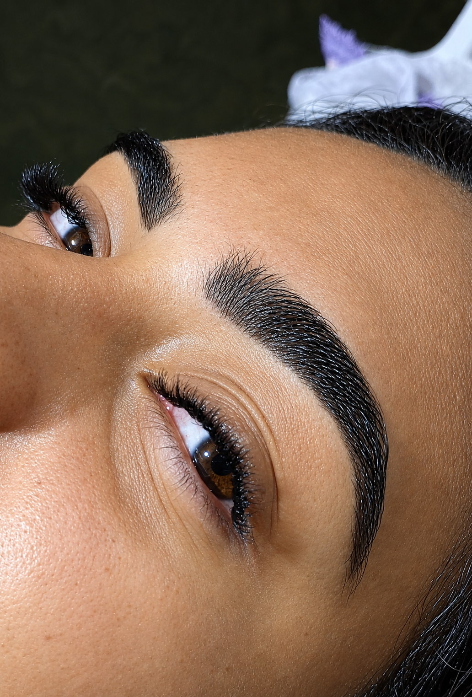

Tufo de Nó:
um olhar
marcante.
Para quem ama cílios mais encorpados e um olhar de destaque. A técnica de Tufo de Nó proporciona um visual intenso, valorizando ainda mais a sua beleza.
Quero agendar →Olhar
marcante
Mais
volume
Beleza e
autoestima

Mais intensidade
para o seu olhar.
O Tufo de Nó é uma técnica de aplicação de pequenos conjuntos de fios unidos por uma base com nó, criando um efeito mais preenchido e destacado.
É uma opção para quem deseja cílios com aparência mais volumosa e um olhar expressivo, sempre respeitando as características e necessidades de cada cliente.
Saiba maisUm olhar cheio de personalidade.
Destaque sua beleza com uma técnica que valoriza a expressividade do olhar.
Efeito volumoso
Fios agrupados para um visual mais encorpado e destacado.
Olhar expressivo
Uma opção para quem gosta de cílios mais evidentes.
Atendimento personalizado
Cada aplicação considera o efeito desejado e as características naturais.
Beleza que encanta.
Confira os detalhes dessa técnica e inspire-se para transformar seu olhar.
Seu próximo olhar começa aqui.
Em breve, fotos exclusivas dos resultados de Tufo de Nó realizados no studio.